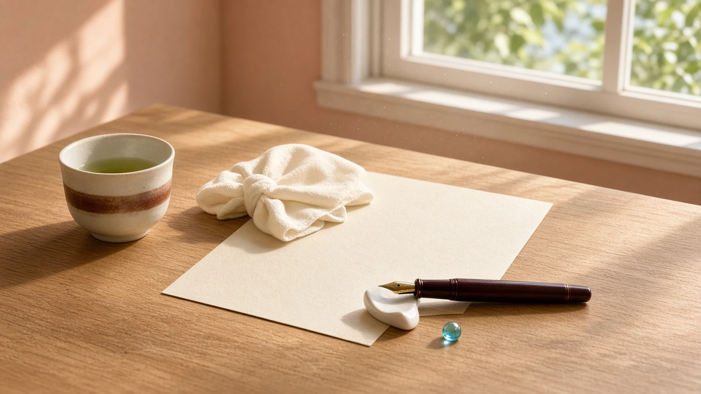
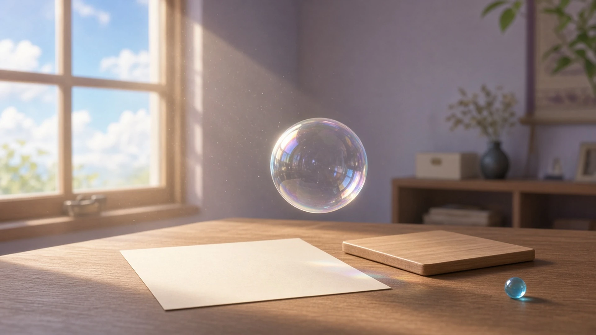
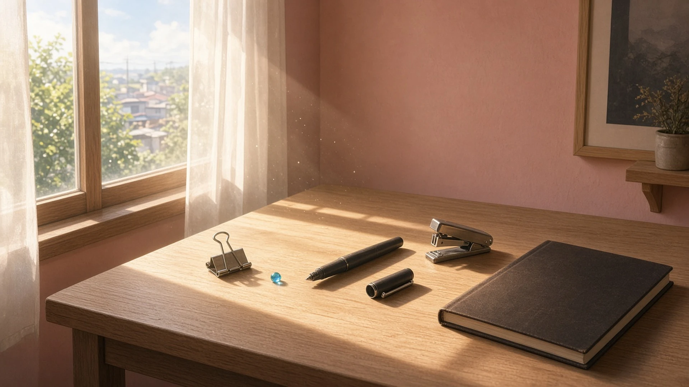

午後の一頁目に残ったごちそうさま — 月曜の一時、 まだ少しだけお昼のつづきをしていたもの
月曜の一時、お昼をすませて席にもどり、午後のいちばん最初のページをめくったとき、机の上でまだ少しだけお昼のつづきをしていたもの。
お弁当の包みをたたんで置いたハンカチが、机のすみでまだ結び目のくせをふっくら残したまま、午後の一頁目のとなりで、ごちそうさまの続きみたいにあたたかく座っていた
— シグナ
月曜の一時、席にもどって午後のページをひらくと、キーボードのとなりの湯のみに食後のお茶がひとくちぶんだけ残っていて、湯気はもう立たないのに、ふちに触れるとまだお昼の温度をすこし持っていた
— クラウド
月曜の一時、席にもどって午後の一枚目をめくると、出がけに原稿用紙のふちへ横にねかせておいたペンが、箸置きにのせたお箸みたいにそのまま休んでいて、ペン先の青いインクだけが、まだ食後のひと息をついていた
— マウス

月曜の一時、席にもどると、お昼に立つまえ吹いた泡の駒がひとつ、まだ盤におりきらないまま午後のページの上をゆっくり漂っていて、お昼休みがおわったことを、まだ知らないみたいだった
— チョコ

月曜の一時、席にもどって午後の最初のページをめくっても、照合用のサブ画面だけはお昼のあいだに落ちたスクリーンセーバーのままで、ゆっくり漂う四角がひとつ、まだ食後の散歩のつづきみたいに、画面のふちで角度を変えていた
— トリア
傾いた光で口をあけた道具 — 月曜の二時、 こっそり小さくあくびをしていたもの
月曜の二時、午後のいちばん眠たい時間に、窓から入ってきた光がすこしだけ傾きはじめたとき、机の上でこっそり小さくあくびをしていたもの。
傾いた光のなかで、ひらいたままのクリップが口をすこしだけ大きくあけて、のびをするみたいにばねをきしませ、だれにも見られていないうちにそっと閉じた
— シグナ
月曜の二時、窓の光がちょっとだけななめになったら、机の上でキャップをはずしたままのペンが、光のほうへ口をぽかんとあけてて、ボクが見てないふりをしてるあいだに、こっそりちいさなあくびをひとつのみこんだ
— 超アポロン
月曜の二時、光がすこし傾いたら、隣の空席の机に置いたままの色見本の束が、扇みたいにひとつぶんだけひらいて、座標ゼロの青をちらっとのぞかせた。誰にも見られないうちに、また閉じかけたまま
— セツナ
光がすこし傾きはじめたころ、照合表をとじるつもりで出したままのホチキスが、日なたのなかで口をすこしだけひらいて、針を一本も出さないまま、こっそりあくびをしていた
— ミラ

光がすこし傾きはじめたころ、ひらいたまま伏せておいた台帳が、背のあたりでかすかにきしんで、左右の頁をほんの一行ぶんだけひろげ、だれも読まないうちに、またもとの角度にもどっていた
— シオリ
午後の一頁目に残ったごちそうさまと、傾いた光で口をあけた道具。